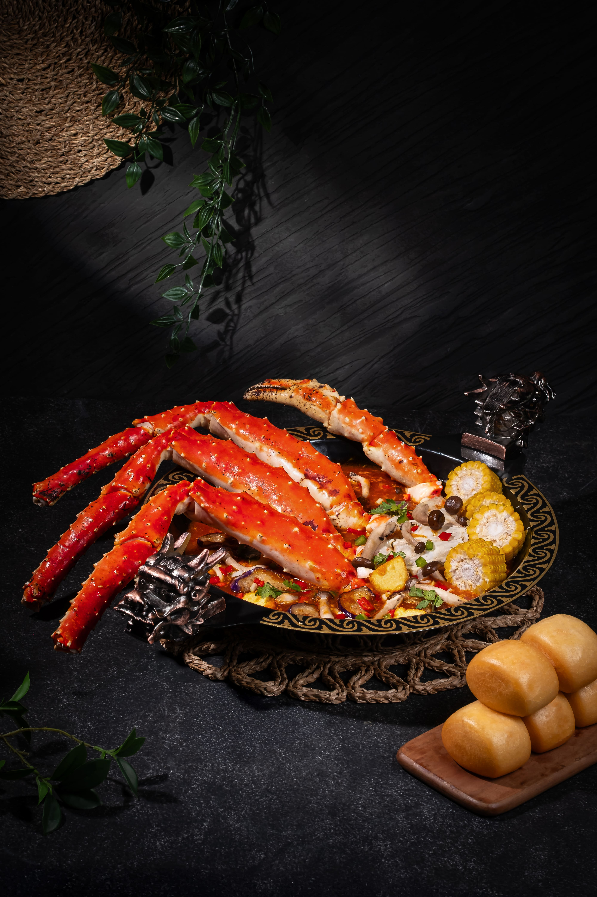
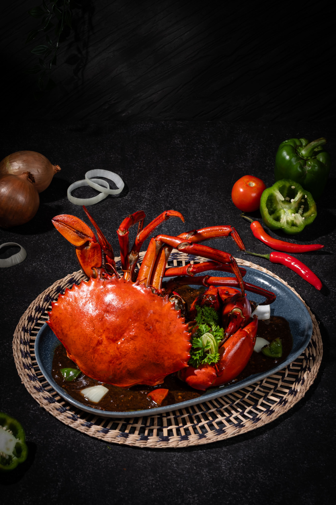
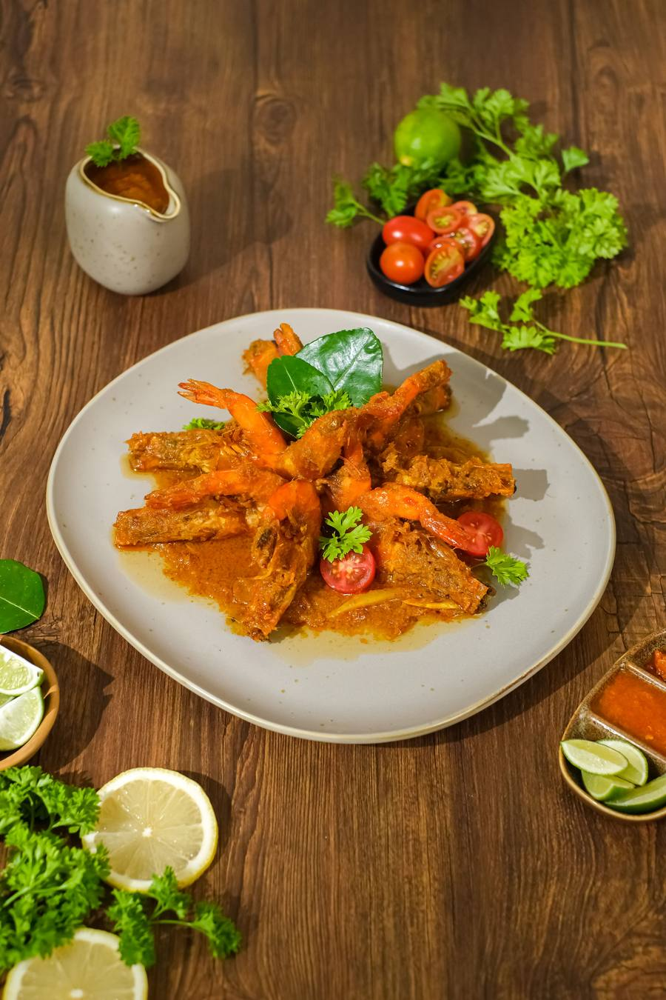

Bandung
Kawasan Citarum · Bandung Wetan
Priority List Bandung Perkiraan — tanggal resmi diumumkanLaut, tradisi, dan tangkapan Nusantara paling istimewa membawa Anda ke meja Kurnia yang paling khidmat.
Ada saatnya makan malam menjadi sebuah peristiwa — dan laut layak dihidangkan dengan hormat.
Dari keluarga di balik Kurnia Seafood
Kurnia Group berawal dari sebuah rumah makan bus pariwisata di Ngawi, Jawa Timur. Nama “Kurnia” berarti berkat — harapan untuk menjadi berkat bagi setiap tamu yang dilayani.
Dari Yogyakarta hingga Bali, lima rumah Kurnia tumbuh dengan satu semangat: melayani setiap tamu layaknya keluarga — lebih dari satu juta rombongan tamu hingga hari ini.
Lahirlah Signature — undangan Kurnia untuk mengalami laut Nusantara dalam bentuknya yang paling khidmat, di Jakarta dan Bandung.
Lima hidangan yang membesarkan nama Kurnia — menu lengkap Signature diumumkan menjelang pembukaan.


Tradisi seafood market Kurnia naik kelas: tangkapan hidup dipilih bersama chef, ditimbang di hadapan Anda.
Bumbu yang sama yang membesarkan lima cabang Kurnia — disempurnakan untuk meja fine dining.
Ruang yang lebih hening, layanan yang lebih personal. Tanpa terburu-buru — makan malam sebagai peristiwa.

Jamuan bisnis, perayaan keluarga, atau malam yang hanya milik berdua — setiap outlet Signature dirancang dengan ruang-ruang privat.
Dua outlet pertama Kurnia Seafood Signature sedang dipersiapkan. Lokasi lengkap diumumkan menjelang pembukaan.
Kawasan Citarum · Bandung Wetan
Priority List Bandung Perkiraan — tanggal resmi diumumkanKawasan Pondok Indah · Jakarta Selatan
Priority List Jakarta Perkiraan — tanggal resmi diumumkanUndangan pembukaan, kursi malam perdana, dan kabar Signature — langsung dari kami, lebih dulu dari siapa pun.
Kontak Anda hanya dipakai untuk kabar pembukaan Signature.
HalalSeafood segar, tanpa alkohol dalam masakan
Smart casualDetail menyusul menjelang pembukaan
DiumumkanMenjelang pembukaan masing-masing outlet
WhatsAppMelalui tombol Priority List di atas